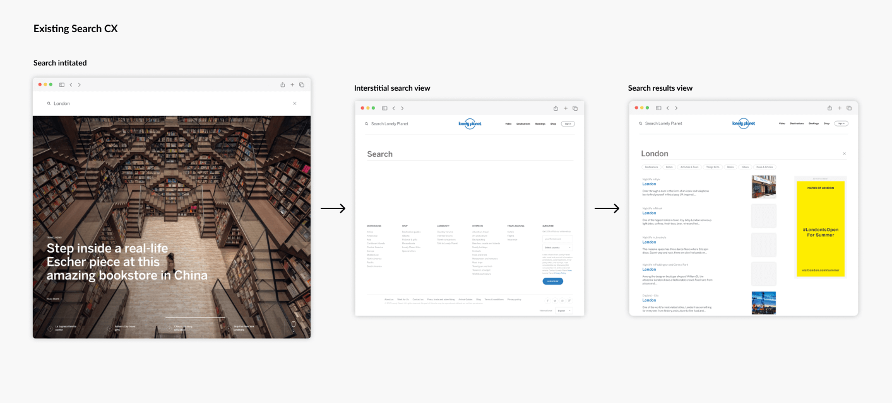
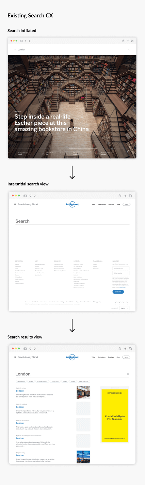
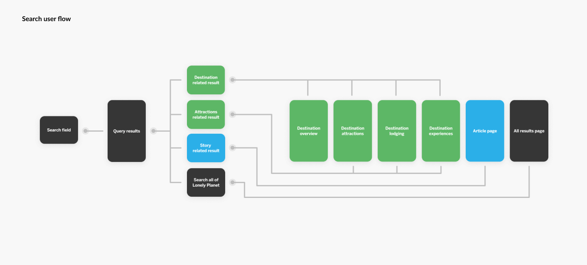
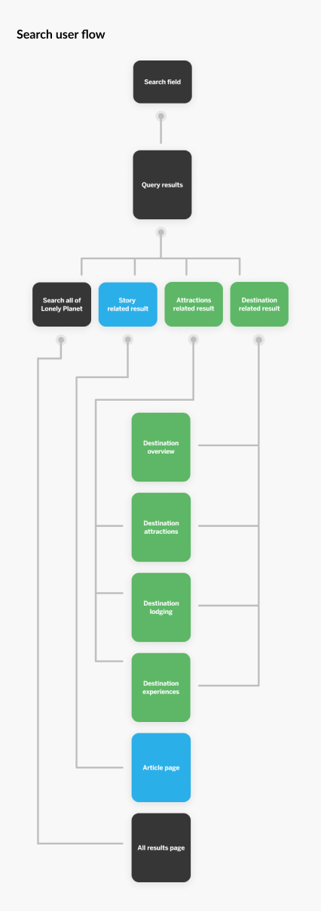
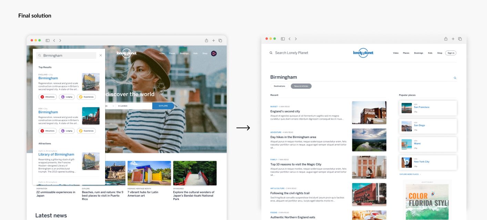
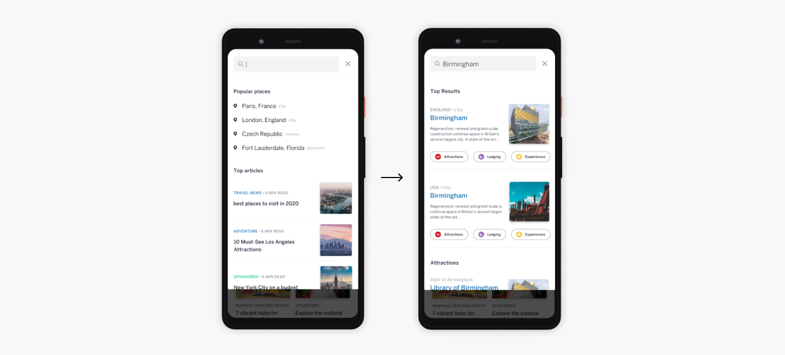
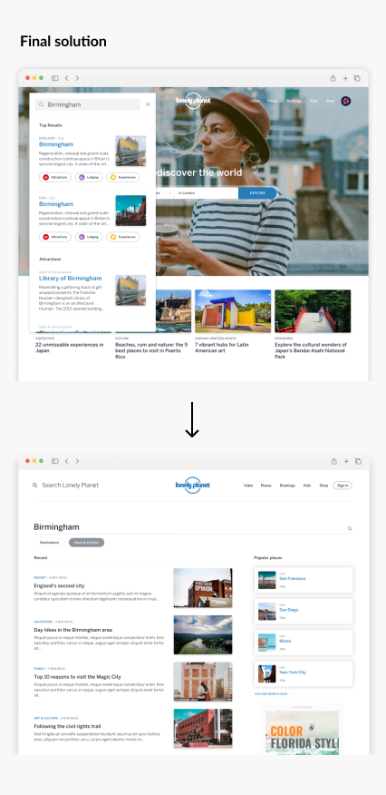
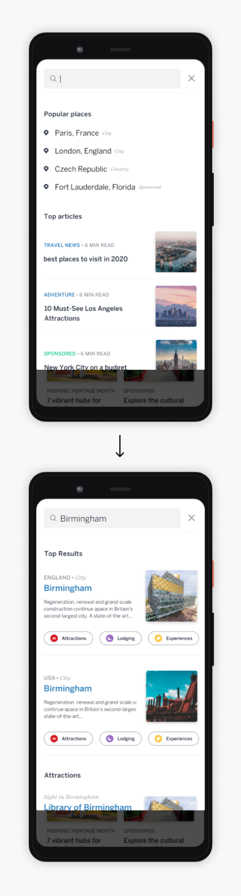

Lonely Planet Search
Lead UX Designer - 6/2020 - 10/2020
Project Overview
Lonely Planet is the world's largest travel publisher, with an extremely robust website. The site has unique urls for literally 100s of thousands of cities, countries and points of interest around the world.
Project Goal
The search experience on Lonely Planet's website was a mess. The results were not ranked by relevance, the flow required the customer to initiate the search field multiple times, and the performance was slow and sluggish. I set out to redesign this experience and work hand in hand with the engineering team to ensure quick and relevant results for would-be travelers visiting the site.
The problem
Imagine searching for "London" when planning your next vacation, and after waiting 10-20 seconds for the query to happen, the results displayed are for restaurants and nightclubs named "London" in Kyiv or Berlin. This was the disjointed an unhelpful state of Lonely Planet's search feature.
I knew that in order to successfully rebuild the search feature, it would be a two-fold effort. Not only would I have to nail down the CX in a way that was quick and intuitive for our customers, but I'd also have to work closely with engineering to make sure our page speed was lightning fast, and that the results were ranked according to relevance.
I knew that in order to successfully rebuild the search feature, it would be a two-fold effort. Not only would I have to nail down the CX in a way that was quick and intuitive for our customers, but I'd also have to work closely with engineering to make sure our page speed was lightning fast, and that the results were ranked according to relevance.


The process
I began by going through several iterations of a new search CX for desktop and mobile. Several of these iterations were disproven in user testing sessions, and I had to go back to the drawing board more than once. Eventually I landed on a design and flow that resonated with our tests participants. The key was taking into account a way to easily funnel customers into our multiple areas of content (destinations, articles, points of interest, and experiences).
Once I nailed the UI and look and feel, it was time to figure out how to provide quick queries and relevant rankings with live code. Working with our engineering team, we identified a service called Swiftype which would be able to not only cache our massive amount of urls and meta tag data, but also allow algorithmic as well as manual rankings of the results. This allowed us to ensure that when a customer searches for "London", they are actually getting results for the city in the UK, and not a nightclub in Kyiv.
Once I nailed the UI and look and feel, it was time to figure out how to provide quick queries and relevant rankings with live code. Working with our engineering team, we identified a service called Swiftype which would be able to not only cache our massive amount of urls and meta tag data, but also allow algorithmic as well as manual rankings of the results. This allowed us to ensure that when a customer searches for "London", they are actually getting results for the city in the UK, and not a nightclub in Kyiv.


The solution
After the implementation of the new search CX, we saw dramatic improvements across the board. Our page speed ranking for the all results view increased from 42 to 73. Our pre-search bounce rate improved from 45% to 32%. The post-search bounce rate improved from 70% to 10%, which is incredible. We also saw massive improvements in our relevancy rankings for our top 100 queries.
All in all, this redesign was a huge success. We had a joke internally at Lonely Planet before this project that the best way to search on Lonely Planet was to open a new Google search tab in your browser. Happily, this no longer was the case.
All in all, this redesign was a huge success. We had a joke internally at Lonely Planet before this project that the best way to search on Lonely Planet was to open a new Google search tab in your browser. Happily, this no longer was the case.



